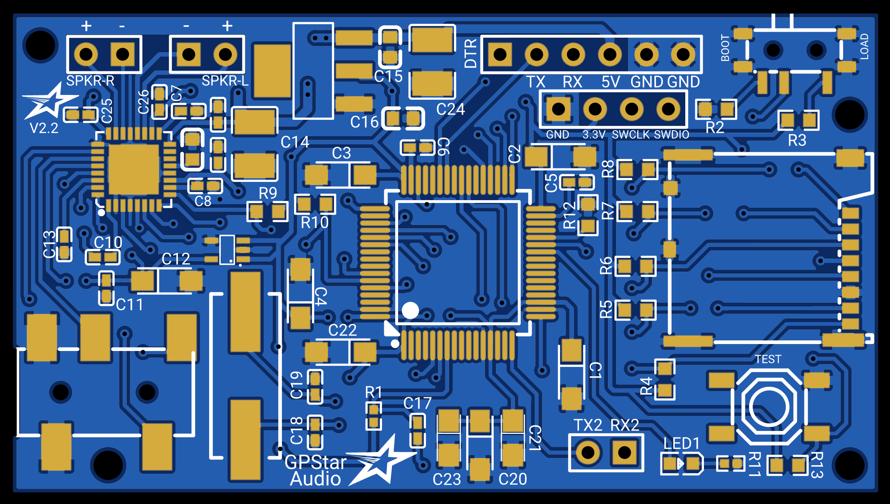

GPStar Audio - Connection Details
GPStar Audio - Connection Details
GPStar Audio is a polyphonic audio player capable of playing and mixing together multiple audio tracks at the same time to create a smooth, rich and fluid audio experience. Support for GPStar Audio was introduced in GPStar Proton Pack and Neutrona Wand firmware versions V5.0.0 and later. Additional information regarding firmware, speakers, amplifiers, and installation may be found on the SOUND guide.

Standard Connection UART (JST-XH 6-pin)
| Pins | Notes |
|---|---|
| DTR/TX/RX/5V/GND/GND | *See Below* This connection serves as the main power source and communication but it also serves as a UART programming header for software updates (optional).Connector type: 6pin JST-XH |
For connecting the UART pins, use a suitable FTDI chip such as the same FTDI Basic 5V used for programming the GPStar Proton Pack or Neutrona Wand. Pins on the PCB should align with with the standard wire order for FTDI-to-USB cables which use a single Dupont 6-pin connector. Observe these common colors and notes to ensure proper orientation:
- The ground pin will typically be a black wire, while VCC will typically be red.
- The DTR pin on the PCB will connect to a wire labelled either DTR or RTS.
- Any wire labelled CTS will be connected to the 2nd pin labelled GND on the PCB.
- Be careful to not reverse the connector!
Special Connectors & Switches
| Label | Notes |
|---|---|
| BOOT/LOAD | A slide switch button located next to the JST-XH 6 pin UART connector. When set to BOOT, the system will operate, however when set to LOAD, then the system enters a programming mode and allows you to flash updated firmware over the UART connection. Make sure it is set to BOOT afterwards for it to operate. |
| SPKR-R | Right Speaker output from the on-board stereo amplifier. Capable of powering either a 4Ω 2.5W or 8Ω 1.25W speaker at 5V. *See Below* Connector type: 2pin Terminal Block |
| SPKR-L | Left Speaker output from the on-board stereo amplifier. Capable of powering either a 4Ω 2.5W or 8Ω 1.25W speaker at 5V. *See Below* Connector type: 2pin Terminal Block |
| AUX | *Not labelled* The on-board stereo auxiliary headphone jack outputs stereo sound and can be fed to any type of amplifier or audio device with a 3.5mm auxiliary input port. When a cable is inserted, the system will turn off the on-board stereo amplifier and output sound from this port instead. |
If you are using the on-board stereo amplifier with only one speaker for a mono output setup, then connect the single speaker to either SPKR-R or to SPKR-L only.
The on-board stereo amplifier is capable of powering either a 4Ω 2.5W or 8Ω 1.25W speaker at 5V from each channel.
Optional Connectors
| Label | Pins | Notes |
|---|---|---|
| ST-LINK | GND/3.3V/SWCLK/SWDIO | *Not Labelled* These 4 pins grouped together can be connected to a ST-LINK for debugging or as a alternative way to flash updated firmware. |
| TX2/RX2 | TX2/RX2 | Alternative serial communication port used for debugging. |
| TEST | A button located on the lower right corner of the board. Pressing this button will play the first track on the Micro SD Card. |